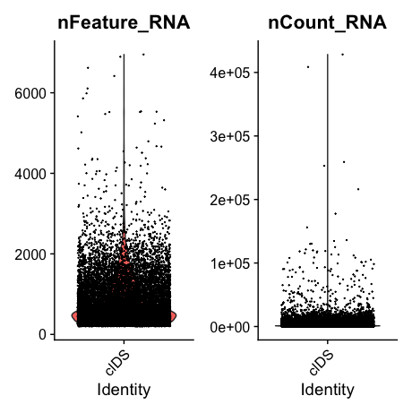
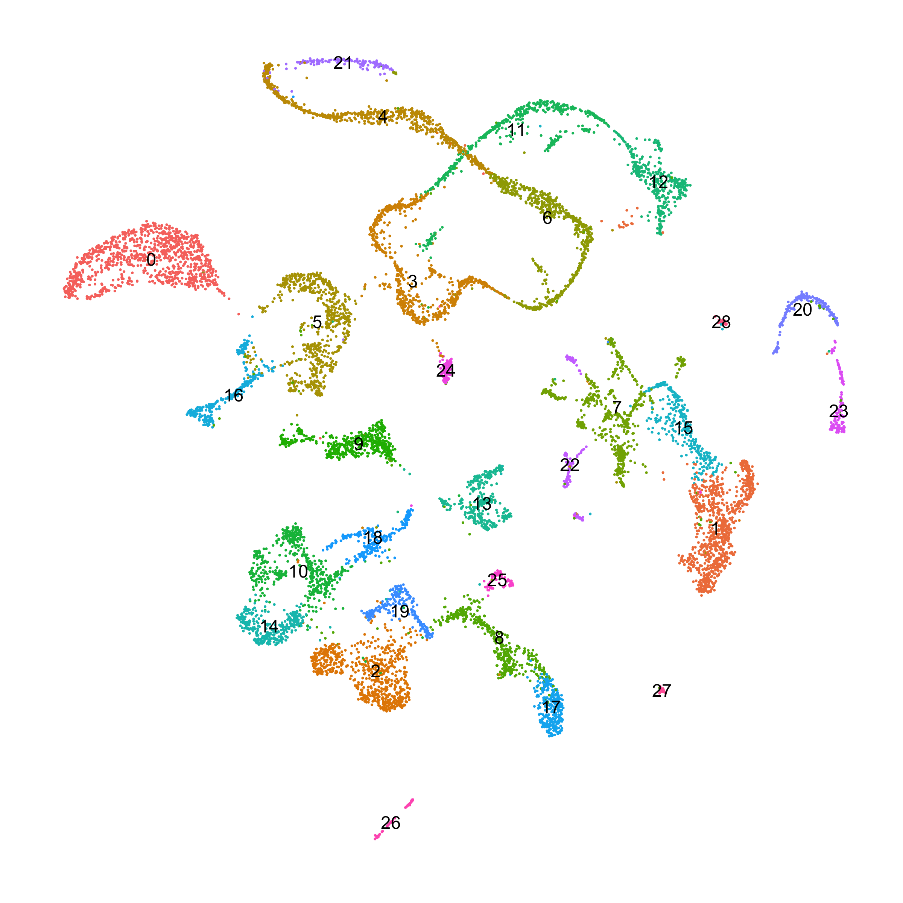
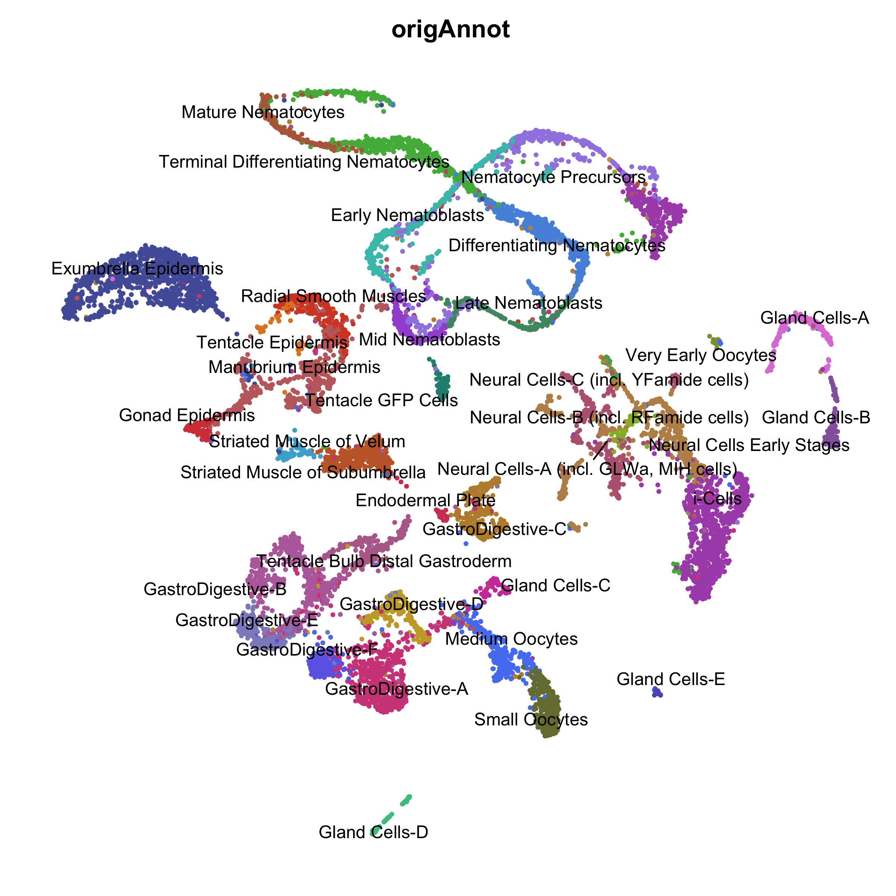
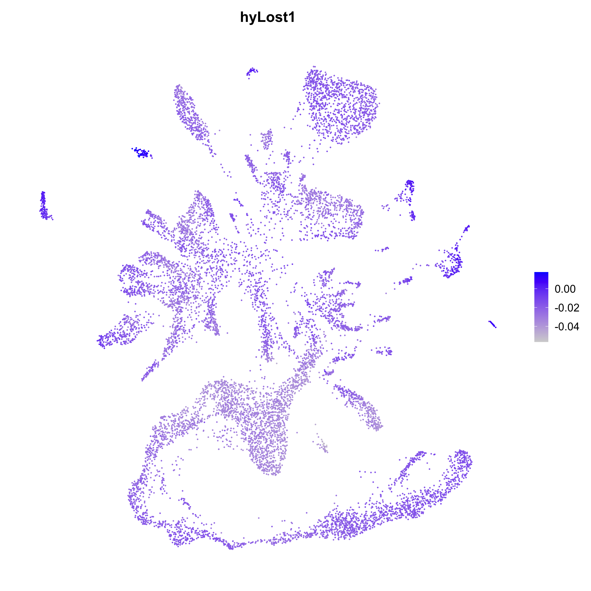

Aligning and Processing Clytia Single Cell Data
This document covers our re-mapping of the Clytia hemisphaerica medusa single-cell atlas. This entailed generating a new set of gene models for the most recent Clytia genome assembly, mapping the raw reads to the new gene models, generating new cell-type clusters and UMAP plot, and visualizing the expression patterns of Clytia genes that were lost in the Hydra lineage.
Aligning and Processing Clytia Single Cell DataGenerating a New Set of Clytia Gene ModelsMapping scRNA-seq Data to the Updated Clytia GenomeInitial Clustering AnalysisVisualizing Expression of Genes Lost in HydraFiles Associated with This Document
Generating a New Set of Clytia Gene Models
The original Clytia single cell atlas publication created a new set of gene models for mapping their scRNA-seq data by generating a new de novo transcriptome using Trinity, merging those transcripts with transcripts from the original Clytia genome annotation, and then mapping the merged transcripts to the v1 Clytia genome with GMAP. However, we used an updated, more contiguous version of the Clytia genome for our whole-genome alignments (described in 07_genomeConservation.md). Because we wanted to use the same Clytia reference genome throughout the study, this motivated us to use gene models for this updated assembly. Gene models are available for the updated genome, but they have relatively low BUSCO scores (81.1%). We wanted to combine multiple sources of gene predictions to try and maximize gene model completeness.
To do this, we started with the Trinity transcriptome from the Clytia single-cell paper (called `transcripts_TRINITY_20201021.fa, downloaded here) and the v1 transcript models from the initial Clytia genome annotation (called transcripts.fa, downloaded here). We combined these two reference files:
xcat transcripts.fa transcripts_TRINITY_20201021.fa > clytia.oldNames.fa
#fixing any duplicated IDsseqkit rename clytia.oldNames.fa > clytia.faWe then aligned the resulting fasta file to the updated Clytia genome (file renamed to clytiaG.fa, downloaded from here) using PASA. This required that we first prep the sequence file using the PASA seqclean command:
(01_newGenes/runCleanup.sh)
xxxxxxxxxx#SBATCH -p med#SBATCH --job-name=pasaC#SBATCH -c 1#SBATCH -t 60-0#SBATCH --mem=16G#SBATCH --error=pasaC.err#SBATCH --output=pasaC.out
module load singularity
singularity exec -B /home/jacazet/reference/makerAnnotations/aepAnnot/pasa/clPasaRedo \ ~/pasa.sif /usr/local/src/PASApipeline/bin/seqclean clytia.faWe then ran the standard PASA annotation pipeline:
(01_newGenes/runPipeline.sh)
xxxxxxxxxx#SBATCH -p med#SBATCH --job-name=pasaP#SBATCH -c 24#SBATCH -t 60-0#SBATCH --mem=0#SBATCH --error=pasaP.err#SBATCH --output=pasaP.out
module load singularity
singularity exec -B /home/jacazet/reference/makerAnnotations/aepAnnot/pasa/clPasaRedo \ ~/pasa.sif /usr/local/src/PASApipeline/Launch_PASA_pipeline.pl \ -c alignAssembly.config -C -R --CPU 12 \ --ALIGNER gmap,blat -g clytiaG.fa -t clytia.fa.clean \ -T -u clytia.fa --TRANSDECODER \ -dThe PASA pipeline mainly just aligned the transcripts we provided to the genome and tried to resolve those aligned transcripts into model 'assemblies' of transcribed regions across the genome. To get candidate ORFs from these assemblies we ran the following command:
(01_newGenes/runCDS.sh)
xxxxxxxxxx#SBATCH -p med#SBATCH --job-name=cds#SBATCH -c 1#SBATCH -t 60-0#SBATCH --mem=8G#SBATCH --error=cds.err#SBATCH --output=cds.out
module load singularity
singularity exec -B /home/jacazet/reference/makerAnnotations/aepAnnot/pasa/clPasaRedo \ ~/pasa.sif /usr/local/src/PASApipeline/scripts/pasa_asmbls_to_training_set.dbi \ --pasa_transcripts_fasta clPasa.sqlite.assemblies.fasta \ --pasa_transcripts_gff3 clPasa.sqlite.pasa_assemblies.gff3The output from this step was a bit messy. The problem appeared to arise from the fact that in some cases PASA predicted multiple overlapping ORFs from a single assembly, and instead of treating them like different isoforms of the same gene, labeled them as separate genes in the gff. These resulted in cases where two genes would have the same root name, but with different suffixes (e.g., asmbl_100.p1 and asmbl_100.p2). For the sake of simplicity, we just wanted to collapse these alternate ORFs into a single gene with a single unique identifier.
We attempted to clean up this problem using AGAT:
xxxxxxxxxx#fix any general GFF3 formating issuesagat_convert_sp_gxf2gxf.pl -gvi 3 -gvo 3 -g clPasa.sqlite.assemblies.fasta.transdecoder.genome.gff3 -o clPasa.gff3
#this is meant to merge genes with overlapping CDS into a single gene with multiple isoformsagat_sp_fix_overlaping_genes.pl -f clPasa.gff3 -o clPasa.merge.gff3
#Remove any secondary isoforms for each geneagat_sp_keep_longest_isoform.pl --gff clPasa.merge.gff3 -o clPasa.merge.longestIso.gff3However, we found that this approach didn't work very well and still left us with multiple redundant, overlapping genes. We therefore created a custom R script to address the issue:
(01_newGenes/pasaGffFix.R)
xxxxxxxxxxlibrary(rstudioapi)
setwd(dirname(rstudioapi::getActiveDocumentContext()$path))
inGff <- read.delim('clPasa.merge.longestIso.gff3',sep = '\t', header = F, skip = 1)
#pull out the root assembly ID (and isoform number) for each gene modelinGff$aID <- gsub('.*(asmbl_\\d+[.]p\\d+).*','\\1',inGff$V9)
#make a new object, where we'll find the problematic overlapping genesidProb <- inGff[inGff$V3 == 'gene',]
#drop the p# isoform suffixidProb$aIDsub <- gsub('[.]p\\d+','',idProb$aID)
#find all cases where an assembly name is duplicatedidProb <- idProb[idProb$aIDsub %in% idProb[duplicated(idProb$aIDsub),'aIDsub'],]
#for all assembly #'s that are duplicated, calculate the total#length of coding sequence for each isoform idProb$len <- vapply(idProb$aID, function(x) { codRow <- inGff[inGff$aID == x & inGff$V3 == 'CDS',4:5] codRow$len <- codRow$V5 - codRow$V4 return(sum(codRow$len))},numeric(1))
#break up DF into sub DFs grouped by assembly #idProb.list <- split(idProb,idProb$aIDsub)
#flag any isoform that isn't the longest for that assembly #idProb.list <- lapply(idProb.list, function(x){ x$drop <- (x$len != max(x$len)) | (x$len == 0) return(x)})
#sometimes there are ties, so just arbitrarily pick#one of the longest ones to keepidProb.list <- lapply(idProb.list, function(x){ if(length(which(x$drop == F)) > 1){ x <- x[order(-x$len),] x$drop <- T x$drop[1] <- F } return(x)})
idProb.df <- do.call(rbind,idProb.list)
#get the ID for all isoforms that we'll be droppingdropThese <- idProb.df[idProb.df$drop,'aID']
#remove all redundant isoform rowsinGff <- inGff[!(inGff$aID %in% dropThese),]
write.table(inGff[,c(1:9)],file = 'clPasa.merge.longestIso.lr.gff3',sep = '\t',quote = F, row.names = F, col.names = F)
Finally, we also brought in the publicly available gene models for the updated assembly (called Clytia_hemisphaerica_gca902728285.GCA902728285v1.51.gff3, available here) to try and maximize the completeness of our hybrid gene models.
xxxxxxxxxxcat Clytia_hemisphaerica_gca902728285.GCA902728285v1.51.gff3 clPasa.merge.longestIso.lr.gff3 > clFinal.gff3agat_sp_fix_overlaping_genes.pl -f clFinal.gff3 -o clFinal.merge.gff3agat_sp_keep_longest_isoform.pl --gff clFinal.merge.gff3 -o clFinal.merge.longestIso.gff3
#drop comment/metadata linessed '/^##/d;/^#!/d' clFinal.merge.longestIso.gff3 > clFinal.merge.longestIso.rfmt.gff3
#give all linked features a shared tag (gene_id)agat_sq_add_locus_tag.pl --li "ID" -p "gene" --lo "gene_id" --of 3 --gff clFinal.merge.longestIso.rfmt.gff3 -o clFinal.merge.longestIso.rfmt.tag.gff3
#covert to gtf from gff3agat_convert_sp_gxf2gxf.pl -c 'gene_id' -g clFinal.merge.longestIso.rfmt.tag.gff3 --gvi 3 --gvo 2.5 -o clFinal.merge.longestIso.rfmt.tag.gtfWe then used a custom R script to drop non-coding features from the merged gtf file (mainly from the Ensembl GFF) and simplify the gene names:
(01_newGenes/clGffFix.R)
xxxxxxxxxxlibrary(rstudioapi)
setwd(dirname(rstudioapi::getActiveDocumentContext()$path))
inGff <- read.delim('clFinal.merge.longestIso.rfmt.tag.gtf',sep = '\t', header = F, skip = 1)
#drop non-coding gene entriesinGff <- inGff[inGff$V3 != 'region',]inGff <- inGff[inGff$V3 != 'tRNA',]inGff <- inGff[inGff$V3 != 'ncRNA_gene',]
#give the gene ID a simpler formatinGff$gID <- gsub('.*gene_id ([^;]*).*','\\1',inGff$V9)
inGff$gID <- gsub('GENE.(.*)~~.*','\\1',inGff$gID)inGff$gID <- gsub('gene:','',inGff$gID)
inGff$gID <- gsub(' +$','',inGff$gID)
inGff <- inGff[!grepl('rank \\d+$',inGff$gID),]
inGff <- inGff[inGff$V3 %in% c('gene','mRNA','exon','CDS','five_prime_UTR','three_prime_UTR'),]
inGff$gID <- paste0('gene_id "',inGff$gID,'" ; gene_name "',inGff$gID,'" ; transcript_id "',inGff$gID,'" ; transcript_name "',inGff$gID,'"')
write.table(inGff[,c(1:8,10)],file = 'clFinal.merge.longestIso.rename.gtf',sep = '\t',quote = F, row.names = F, col.names = F)We then exported the transcript and protein sequences from these gene models:
xxxxxxxxxxgffread -y clFinal.longestIso.prot.fa -g clytiaG.fa clFinal.merge.longestIso.rename.gtfgffread -w clFinal.longestIso.tran.fa -g clytiaG.fa clFinal.merge.longestIso.rename.gtfThe resulting BUSCO stats of these gene models were pretty good, about 6% more complete BUSCOs than the currently available gene models for the updated genome:
xxxxxxxxxx -------------------------------------------------- |Results from dataset metazoa_odb10 | -------------------------------------------------- |C:87.0%[S:83.0%,D:4.0%],F:3.1%,M:9.9%,n:954 | |830 Complete BUSCOs (C) | |792 Complete and single-copy BUSCOs (S) | |38 Complete and duplicated BUSCOs (D) | |30 Fragmented BUSCOs (F) | |94 Missing BUSCOs (M) | |954 Total BUSCO groups searched |Mapping scRNA-seq Data to the Updated Clytia Genome
As we did for our H. vulgaris scRNA-seq analysis, we opted to use transcripome sequence for mapping the scRNA-seq data. This required that we prep a modified gtf file for the mapping pipeline (this file treat each transcript in the transcriptome as a contig that has a single gene on it that spans the entire sequence). We did this with the following R script:
(02_remapping/makeTranGtf.R)
xxxxxxxxxxlibrary(rstudioapi)library(Biostrings)library(plyr)
setwd(dirname(rstudioapi::getActiveDocumentContext()$path))
tranSeq <- readDNAStringSet('clFinal.longestIso.tran.fa')
tranSeq.dim <- data.frame(ID = names(tranSeq), length = nchar(tranSeq))
tranSeq.dim$ID <- gsub(' .*','',tranSeq.dim$ID)
inGtf <- read.delim('clFinal.merge.longestIso.rename.gtf',header = F, skip = 1)
inGtf <- inGtf[inGtf$V3 == 'mRNA',]
inGtf$V1 <- gsub('.*gene_id ([^ ]+).*','\\1',inGtf$V9)
inGtf$V5 <- mapvalues(inGtf$V1, from = tranSeq.dim$ID, to = tranSeq.dim$length)
inGtf$V4 <- 1
inGtf$V7 <- '+'
inGtf$V3 <- 'exon'
inGtf$new9 <- inGtf$V9
inGtf$new9 <- gsub('([^;]) ([^;])','\\1 "\\2',inGtf$new9)inGtf$new9 <- gsub(' ;','" ;',inGtf$new9)inGtf$new9 <- gsub(' $','"',inGtf$new9)
inGtf$V9 <- inGtf$new9
write.table(inGtf[,1:9], file = 'clFinal.transcriptome.gtf', row.names = F, col.names = F, quote = F, sep = '\t')For mapping, we used the cell ranger pipeline (v6.0.2). First, we prepped the reference metadata prior to running the actual mapping pipeline:
(02_remapping/runMakeRef.sh)
xxxxxxxxxx#SBATCH -p med#SBATCH --job-name=cRanger#SBATCH -c 1#SBATCH -t 60-0#SBATCH --mem=16G#SBATCH --error=cRanger_mkref.err#SBATCH --output=cRanger_mkref.out
cellranger-6.0.2/cellranger mkref --genome=clytiaTran --fasta=clFinal.longestIso.tran.fa --genes=clFinal.transcriptome.gtfThe Clytia data was sequenced over two lanes, and each lane needed to be initially mapped separately. Lane 1 was comprised of samples FT-SA16888 (read1 and read2), FT-SA16889 (read1 and read2), FT-SA16890 (read1 and read2), and FT-SA16891 (read1 and read2) and lane 2 was comprised of samples FT-SA16892 (read1 and read2), FT-SA16893 (read1 and read2), FT-SA16894 (read1 and read2), and FT-SA16895 (read1 and read2).
We used this script to map lane 1 reads:
(02_remapping/runCount1.sh)
xxxxxxxxxx#SBATCH --job-name=clCount1#SBATCH -p bigmemm#SBATCH -c 8#SBATCH -t 60-0#SBATCH --mem=64G#SBATCH --error=clCount_1.err#SBATCH --output=clCount_1.out
cellranger-6.0.2/cellranger count \ --id=lane1 \ --fastqs=raw/lane1 \ --transcriptome=clytiaTran \ --sample=FT-SA16888,FT-SA16889,FT-SA16890,FT-SA16891 \ --chemistry=SC3Pv2 \ --localcores=8 \ --localmem=64And this script to map lane 2 reads:
(02_remapping/runCount2.sh)
xxxxxxxxxx#SBATCH --job-name=clCount2#SBATCH -p bigmemm#SBATCH -c 8#SBATCH -t 60-0#SBATCH --mem=64G#SBATCH --error=clCount_2.err#SBATCH --output=clCount_2.out
cellranger-6.0.2/cellranger count \ --id=lane2 \ --fastqs=raw/lane2 \ --transcriptome=clytiaTran \ --sample=FT-SA16892,FT-SA16893,FT-SA16894,FT-SA16895 \ --chemistry=SC3Pv2 \ --localcores=8 \ --localmem=64To pool the samples after mapping, we prepared the file aggr.csv, which included the paths to the read counts produced by the initial mapping steps:
(02_remapping/aggr.csv)
xxxxxxxxxxsample_id,molecule_h5lane1,lane1/outs/molecule_info.h5lane2,lane2/outs/molecule_info.h5We then aggregated the single cell expression matrices
(02_remapping/runAggr.sh)
xxxxxxxxxx#SBATCH --job-name=aggr#SBATCH -p bigmemm #SBATCH -c 1#SBATCH -t 60-0#SBATCH --mem=16G#SBATCH --error=aggr.err#SBATCH --output=aggr.out
cellranger-6.0.2/cellranger aggr \ --id=clAggr \ --csv=aggr.csv \ --normalize=none \ --nosecondaryThis produced the file raw_feature_bc_matrix.h5 containing the gene-by-cell read count matrix that was used for subsequent analyses.
Initial Clustering Analysis
In the original Clytia scRNA-seq publication, the authors conducted an extensive analysis to identify and exclude low quality cells. We opted to reuse the results from that analysis by simply retaining the cells that were present in the processed dataset from the original publication (available here) in our re-mapped data. After dropping the previously identified problematic cells, we initialized a Seurat object and performed some additional filtering:
(snippet from 03_clustering/initClRemapSeurat.R)
xxxxxxxxxxlibrary(Seurat)library(SeuratDisk)library(plyr)library(tidyverse)library(rstudioapi)library(glmGamPoi)library(plotly)library(RColorBrewer)library(reticulate)library(Matrix)
setwd(dirname(getActiveDocumentContext()$path))
#convert annData object from Clytia scRNA-seq publication to make it easier to import into Seurat#only need to run once#Convert("bus_fs_combo_raw.h5ad", dest = "h5seurat", overwrite = TRUE)
#load clustering analysis object from Clytia scRNA-seq paperclPP <- LoadH5Seurat('bus_fs_combo_raw.h5seurat')
#import newly mapped Clytia gene expression matrixinMat <- Read10X_h5('raw_feature_bc_matrix.h5')
#drop any cell IDs that aren't in the published clustering data objectinMat <- inMat[,colnames(inMat) %in% rownames(clPP@meta.data)]
#create seurat object#drop genes expressed in fewer than 3 cells and cells with fewer than 200 genescl <- CreateSeuratObject(counts = inMat, project = 'clDS', min.cells = 3, min.features = 200)
VlnPlot(cl, features = c("nFeature_RNA", "nCount_RNA"))
Based on this distribution we dropped cells with more than 4000 UMIs, 500 or fewer reads, or greater than 100000 reads.
(snippet from 03_clustering/initClRemapSeurat.R)
xxxxxxxxxxcl <- subset(cl, nFeature_RNA < 4000 & nCount_RNA > 500 & nCount_RNA < 100000)We then ran the standard normalization, clustering, and plotting steps
(snippet from 03_clustering/initClRemapSeurat.R)
xxxxxxxxxxcl <- SCTransform(cl, method = "glmGamPoi")
cl <- RunPCA(cl, npcs = 60, verbose = FALSE)
ElbowPlot(cl,ndims = 60)
We used 45 PCs for clustering and plotting:
(snippet from 03_clustering/initClRemapSeurat.R)
xxxxxxxxxxcl <- RunUMAP(cl, dims = 1:45, min.dist = 0.38,verbose = FALSE, seed.use = 12345)
cl <- FindNeighbors(cl, dims = 1:45, verbose = FALSE)cl <- FindClusters(cl, resolution = 0.5, verbose = FALSE)
saveRDS(cl,file = 'initSeurat.rds')
DimPlot(cl) + NoLegend()
We wanted to validate that our re-mapping and re-clustering recapitulated the results from the original atlas publication, so we imported the fully processed and annotated single cell data from the original publication (available here) and converted it to a Seurat object (easier to work with in R, the initial analysis was done in Python).
(snippet from 03_clustering/initClRemapSeurat.R)
xxxxxxxxxxuse_condaenv("rScanpy", required = T)
sc <- import("scanpy")
adata <- sc$read_h5ad('fedStarved_withUMAPPaga.h5ad')
exprs <- t(adata$X)colnames(exprs) <- adata$obs_names$to_list()rownames(exprs) <- adata$var_names$to_list()# Create the clPP objectclPP <- CreateSeuratObject(exprs)# Set the expression assayclPP <- SetAssayData(clPP, "data", exprs)# Add observation metadataclPP <- AddMetaData(clPP, adata$obs)# Add embeddingembedding <- adata$obsm["X_umap"]rownames(embedding) <- adata$obs_names$to_list()colnames(embedding) <- c("umap_1", "umap_2")clPP[["umap"]] <- CreateDimReducObject(embedding, key = "umap_")
#save reformatted object for use latersaveRDS(clPP,'annotatedCl.rds')
DimPlot(clPP,group.by = 'annosSub', label = T, repel = T) + NoLegend() + NoAxes()
We propagated the cell cluster labels from the original publication clusters to our newly clustered data
(snippet from 03_clustering/initClRemapSeurat.R)
xxxxxxxxxxcl@meta.data$origAnnot <- mapvalues(rownames(cl@meta.data), from=rownames(clPP@meta.data), to = as.character(clPP@meta.data$annosSub), warn_missing = F)
set.seed(12345)umapPal <- sample(c("#b76749","#6d6be8","#94b92c","#a358d6","#52b648","#cf43a8", "#4ac38b","#ab52b7","#59a85a","#5c58c0","#c9a72e","#5581f2", "#e28624","#5693dd","#d6482c","#45c1b8","#d44248","#47afd4", "#c56633","#a187e3","#8b9e41","#df82da","#4c976f","#d14a87", "#238e7e","#d24461","#767d3e","#525ea7","#bc8d39","#9565ab", "#bc8f57","#8b8dc7","#c26b6c","#b96daa","#b96580","#b66c96"))
DimPlot(cl,group.by = 'origAnnot', label = T,repel = T,cols = umapPal,pt.size=0.8) + NoLegend() + NoAxes()
The previous cell type labels largely recapitulated our own clustering results, indicating that our analysis effectively recapitulated the results from the original publication, validating our approach.
Visualizing Expression of Genes Lost in Hydra
The Hydra genus is notable for it's simplified life cycle, lacking the planula and medusa stages found in other hydrozoans such as Clytia. This has been correlated with substantial gene loss in the Hydra lineage, but the function of these lost genes is not well understood. We combined our Orthofinder analysis (described in 03_aepGenomeAnnotation.md) with the Clytia medusa single-cell atlas to determine where genes lost in Hydra are expressed.
We first identified genes that were lost in the Hydra genus. We identified such genes using two criteria: 1) the genes needed to be absent from all Hydra proteomes in our OrthoFinder analysis (H. viridissima, H. circumcincta, H. oligactis, H. vulgaris strain 105, and H. vulgaris strain AEP), and 2) the genes needed to be present in both the Hydractinia echinata and Clytia hemispherica proteomes.
(snippet from 04_geneLoss/geneLoss.R)
xxxxxxxxxxlibrary(rstudioapi)library(Seurat)library(plyr)library(patchwork)library(ggplot2)library(reticulate)
setwd(dirname(getActiveDocumentContext()$path))
#import orthologs resolved at the level of hydrozoahydTab <- read.delim('Results_Sep15_1/Phylogenetic_Hierarchical_Orthogroups/N10Mod.tsv')
#drop any empty columns (species not in clade) hydTab <- hydTab[,!is.na(hydTab[1,])]
#drop AEP transcriptome (redundant)hydTab <- hydTab[,-14]
#because cruxmelitensis has duplicated gene IDs we need to drop it from this analysishydTab <- hydTab[,-5]
#look just at orthologs within Hydra genushydraSpec <- c('H_circumcincta','H_oligactis','H_viridissima','H_vulgaris105','H_vulgarisAEP')
hydTab.hyd <- hydTab[,hydraSpec]
#find orthogroups that are completely absent from Hydra genushydTab.hyd.test <- apply(hydTab.hyd,1,function(x) length(which(x != "")) > 0)
hydTab.lost <- hydTab[!hydTab.hyd.test,]
#make sure the genes lost in Hydra are present in other hydrozoans (more than one)
hydTab.lost <- hydTab.lost[hydTab.lost$H_echinata != '' | hydTab.lost$C_hemisphaerica != '',]
#specifically look at things lost in Hydra but retained in clytia
hydTab.lost.cl <- hydTab.lost[hydTab.lost$C_hemisphaerica != '',]
hydTab.lost.cl <- unlist(strsplit(hydTab.lost.cl$C_hemisphaerica, split = ", "))
write.table(hydTab.lost.cl,'clytiaLostInHydra.txt',row.names = F, col.names = F, quote = F)After we generated our list of lost genes, we wanted to determine where they were expressed in Clytia medusae. Because we used our new Clytia gene models for the Orthofinder analysis, we needed to use our re-mapped version of the Clytia atlas, but we also wanted to make use of the original atlas publication's UMAP and cell type annotations. To do this, we incorporated the UMAP and cluster annotations from the original publication into our re-mapped Seurat object. To have a more resolved view of the neuronal subpopulation, we also incorporated the cluster annotations from the neuronal sub-clustering analysis in the original publication (downloaded here).
(snippet from 04_geneLoss/geneLoss.R)
xxxxxxxxxx####Lost Hydra gene expression in Clytia####
#import remapped clytia single cell datacl <- readRDS('../ds/cl/remap/initSeurat.rds')
#convert neuronal subclustering object from clytia paper into seurat object#only needs to be run onceuse_condaenv("rScanpy", required = T)
sc <- import("scanpy")
adata <- sc$read_h5ad('../cl/remap/neuron_subpops_fs.h5ad')
exprs <- t(adata$X)colnames(exprs) <- adata$obs_names$to_list()rownames(exprs) <- adata$var_names$to_list()# Create the Seurat objectseurat <- CreateSeuratObject(exprs)# Set the expression assayseurat <- SetAssayData(seurat, "data", exprs)# Add observation metadataseurat <- AddMetaData(seurat, adata$obs)# Add embeddingembedding <- adata$obsm["X_umap"]rownames(embedding) <- adata$obs_names$to_list()colnames(embedding) <- c("umap_1", "umap_2")seurat[["umap"]] <- CreateDimReducObject(embedding, key = "umap_")
#save converted object to save time latersaveRDS(seurat,'annotatedNeuroCl.rds')
#import annotations from preprint (also use their umap)cl.annot <- readRDS('../ds/cl/remap/annotatedCl.rds')
cl.neuro <- readRDS('annotatedNeuroCl.rds')
#save the publication UMAP coordscl.umap <- cl.annot@reductions$umap
#save publication metadata (includes cell identities)cl.annot <- cl.annot@meta.data
#drop any cells not in the remapped datasetcl.annot <- cl.annot[rownames(cl.annot) %in% colnames(cl),]
#make sure cell order is the samecl.annot <- cl.annot[match(rownames(cl.annot),colnames(cl)),]
#only keep the cell annotations from the publication metadatacl.annot <- cl.annot[,c('annos','annosSub')]
#drop whole-animal annotations of neuronal cellscl.annot <- cl.annot[!(rownames(cl.annot) %in% colnames(cl.neuro)),]
#extract neuronal analysis metadatacl.annot.n <- cl.neuro@meta.data
#drop any cells not in the remapped datasetcl.annot.n <- cl.annot.n[rownames(cl.annot.n) %in% colnames(cl),]
cl.annot.n.rn <- rownames(cl.annot.n)
#subset metadata to just include neuron cell identitiescl.annot.n <- data.frame(annos='Neuron',annosSub=paste0('Neuro_',cl.annot.n$louvain_neur))
rownames(cl.annot.n) <- cl.annot.n.rn
#combine neuronal and whole-animal annotationscl.annot <- rbind(cl.annot,cl.annot.n)
#make sure cell order in the new metadata table is the same as the seurat object cl.annot <- cl.annot[colnames(cl),]
#add cell type annotations to remapped datasetcl@meta.data <- cbind(cl@meta.data,cl.annot[,c('annos','annosSub')])
#add publication umap to remapped datacl@reductions$oldUmap <- cl.umap
DimPlot(cl,group.by='annosSub',reduction = 'oldUmap',label=T,repel = T) + NoLegend() + NoAxes()ggsave('fullLabClUMAP.png',width = 9,height = 9,dpi = 300)
We then passed the list of genes lost in Hydra to the Seurat AddModuleScore function to calculate a holistic score representing how highly these lost genes are expressed in each Clytia cell transcritome.
(snippet from 04_geneLoss/geneLoss.R)
xxxxxxxxxx#convert underscores to dash for gene names (seurat formatting requirement)hydTab.lost.cl.ds <- gsub('_','-',hydTab.lost.cl)
#drop genes that aren't in clytia seurat objecthydTab.lost.cl.ds <- hydTab.lost.cl.ds[hydTab.lost.cl.ds %in% rownames(cl)]
#calculate holistic score for expression of lost genescl <- AddModuleScore(cl,list(hydTab.lost.cl.ds),name='hyLost')
FeaturePlot(cl,'hyLost1',reduction = 'oldUmap') + NoAxes()ggsave('clLostGeneScores.png',width = 9,height = 9,dpi = 300)
To more clearly visualize how the lost gene module score varied across different cell types, we also generated a box plot that grouped module scores by cell type.
(snippet from 04_geneLoss/geneLoss.R)
xxxxxxxxxxlostPlot <- cl@meta.data[,c(9,10)]
lostPlot$annosSub <- factor(lostPlot$annosSub, levels = rev(c("i-Cells","Very Early Oocytes","Small Oocytes", "Medium Oocytes","Gland Cells-A","Gland Cells-B", "Gland Cells-C","Gland Cells-D","Gland Cells-E", "Neuro_0","Neuro_1","Neuro_2","Neuro_3","Neuro_4", "Neuro_5","Neuro_6","Neuro_7","Neuro_8","Neuro_9", "Neuro_10","Neuro_11","Neuro_12","Neuro_13","Neuro_14", "Nematocyte Precursors","Early Nematoblasts", "Mid Nematoblasts","Late Nematoblasts","Differentiating Nematocytes", "Terminal Differentiating Nematocytes","Mature Nematocytes", "Gonad Epidermis","Manubrium Epidermis","Exumbrella Epidermis", "Tentacle Epidermis","Striated Muscle of Subumbrella","Striated Muscle of Velum", "Radial Smooth Muscles","GastroDigestive-A","GastroDigestive-B", "GastroDigestive-C","GastroDigestive-D","GastroDigestive-E", "GastroDigestive-F","Endodermal Plate","Tentacle Bulb Distal Gastroderm", "Tentacle GFP Cells")))
ggplot(lostPlot,aes(y=annosSub,x=hyLost1,fill=annosSub)) + geom_boxplot() + #geom_jitter(height = 0, width = 0.1, size = 0.1,alpha=0.4) + theme_bw() + theme(legend.position="none") + theme(axis.text.x = element_text(angle = 300, vjust = 0, hjust=0.05))ggsave('lostScores.pdf',width = 6.5,height = 15)
Files Associated with This Document
xxxxxxxxxx11_clytiaAtlasReMap/├── 01_newGenes│ ├── clFinal.longestIso.prot.faFasta file containing the Clytia hemisphaerica protein models generatedin this study by combining previously released Clytia trancritpomes andgene models.│ ├── clFinal.longestIso.tran.faFasta file containing the Clytia hemisphaerica transcript models generatedin this study by combining previously released Clytia trancritpomes andgene models.│ ├── clFinal.merge.longestIso.rename.gtfGTF coordinate file containing the finalized Clytia gene models generatedin this study.│ ├── clFinal.merge.longestIso.rfmt.tag.gtfGTF coordinate file containing an intermediate version of the Clytia genemodels generated in this study. This version merges the Ensembl Clytiagene models with the reformated PASA annotations fromclPasa.merge.longestIso.lr.gff3.│ ├── clGffFix.RR script that drops non-coding genes and simplifies gene ID formating inclFinal.merge.longestIso.rfmt.tag.gtf to generateclFinal.merge.longestIso.rename.gtf.│ ├── clPasa.merge.longestIso.gff3GFF3 coordinate file containing an intermediate version of the Clytia genemodels generated in this study. This version contains the PASA-derivedgene models generated by using both the v1 Clytia gene models and theTrinity transcriptome from the original Clytia atlas publication.│ ├── clPasa.merge.longestIso.lr.gff3GFF3 coordinate file containing an intermediate version of the Clytia genemodels generated in this study. It has additionally been processed to havelow redundancy by removing overlapping gene models that were present in theinitial PASA output.│ ├── clPasa.sqlite.assemblies.fastaFASTA file containing PASA-derived predictions of transcript assemblysequences in the Clytia genome generated using both the v1 Clytia genemodels and the Trinity transcriptome from the original Clytia atlaspublication.│ ├── clPasa.sqlite.assemblies.fasta.transdecoder.genome.gff3GFF3 coordinate file containing the PASA-derived gene models for the Clytiagenome. Following the standard PASA-pipeline, this version of the gene modelswere additionally processed using transdecoder to identify ORFs in eachpredicted transcript sequence.│ ├── clPasa.sqlite.pasa_assemblies.gff3GFF3 coordinate file containing the PASA-derived gene models for the Clytiagenome.│ ├── clytia.faFasta file containing combined transcript sequences from both the v1 Clytiagenome gene models and the Trinity transcriptome generated as part of theoriginal Clytia atlas publication. The fasta headers in this file havebeen processed to fix any duplicated sequence IDs.│ ├── pasaGffFix.RR script that collapses multiple overlapping ORF predictions in the PASA-generated gene models into the single longest isoform for each gene.│ ├── runCDS.shShell script that uses a PASA utility script to predict ORFs in the PASAtranscript assemblies generated by runPipeline.sh.│ ├── runCleanup.shShell script that preps clytia.fa for the PASA genome alignment pipeline.│ └── runPipeline.shShell script that uses the PASA pipeline to align clytia.fa to the Clytiagenome and generate transcript/gene models.├── 02_remapping│ ├── aggr.csvConfig file used by runAggr.sh to combine the read counts from the lane 1and lane 2 Clytia 10X libraries.│ ├── clFinal.transcriptome.gtfGTF coordinate file for the Clytia transcriptome (clFinal.longestIso.tran.fa).Simply lists each transcript as its own contig, spanned by a single gene(named after the transcript).│ ├── makeTranGtf.RR script used to generate clFinal.transcriptome.gtf fromclFinal.merge.longestIso.rename.gtf.│ ├── raw_feature_bc_matrix.h5H5 binary file containing the digital gene expression matrix for the Clytiasingle-cell atlas aligned to the transcripts in clFinal.longestIso.tran.fa.│ ├── runAggr.shShell script that combines the digital gene expression matrices calculatedfor each lane of sequencing for the Clytia atlas into a final pooled matrix(raw_feature_bc_matrix.h5).│ ├── runCount1.shShell script that uses the cellranger pipeline to align and process theClytia 10X reads from lane 1 to the clFinal.longestIso.tran.fa transcriptome.│ ├── runCount2.shShell script that uses the cellranger pipeline to align and process theClytia 10X reads from lane 2 to the clFinal.longestIso.tran.fa transcriptome.│ └── runMakeRef.shShell script that preps the clFinal.longestIso.tran.fa transcriptome forthe cellranger mapping pipeline.├── 03_clustering│ ├── annotatedCl.rdsR binary file containing a Seurat-formatted version of the fully annotatedClytia atlas from the original publication.│ ├── bus_fs_combo_raw.h5seuratH5 binary file containing a Seurat-formatted version of the raw, un-annotatedClytia atlas from the original publication.│ ├── initClRemapSeurat.RR script that performs the initial clustering and visualization of the re-mapped version of the Clytia single cell atlas and compares the resultsto the annotations from the original atlas publication.│ └── initSeurat.rdsR binary file containing a Seurat object with the clustered and annotatedversion of the Clytia atlas that was aligned to the clFinal.longestIso.tran.fatranscriptome.└── 04_geneLoss├── annotatedNeuroCl.rdsR binary file containing a Seurat-formatted version of the annotated neuronalsubclustering analysis from the original Clytia atlas publication.├── clytiaLostInHydra.txtText file listing the IDs of Clytia genes that have been lost in the Hydra lineage.├── geneLoss.RR script that identifies Clytia genes that have been lost in the Hydra lineage andthen characterizes trends in the expression patterns of those lost genes in the Clytiasingle-cell atlas.└── neuroLabGeneLossCl.rdsR binary file containing an updated version of initSeurat.rds that incorporates neuronalsubtype annotations from annotatedNeuroCl.rds. The Seurat object also contains a metadatacolumn with a module score that represents how highly each cell expresses the set of Clytiagenes lost in the Hydra lineage.